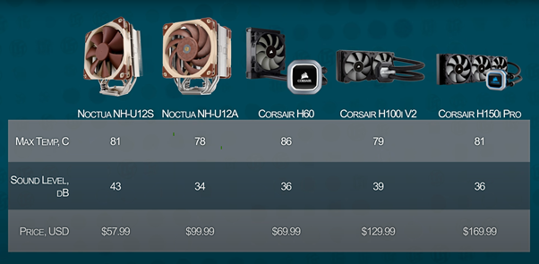

Overview
Modularity seems to be an aspect of technology that has been under the microscope in recent years. It minimises waste, allows for adaptability and future proofing all forms of technology. A part of the industry that has always been focused on creating customisable and upgradable systems has to be computers. The waters have been tested with modularity and PC components, but a concrete solution is yet to surface. Razer’s Project Christine, just like Google’s Project Ara, seems to have been put aside before it was even realised. I would like to investigate why this is the case and what can be improved on what has been done so far.
Motivation
Having built many a PC, I have found that people would like to just have a DIY solution. There needs to be an alternative to working with such delicate and expensive parts. Not only is the building of the PC a fragile process, but so is knowing what parts will work with what. I have come across many people who have been excited and motivated to build their own PC, only to buy the parts, and realise something does not fit or work correctly. Having a pre-built case that has the ability to easily cold-swap parts in and out, whether it is for repair or upgrade reasons, should be an option. With the right amount of technical support, if a modular PC manufacturer was to see the light of the market, I believe it would make a great competitor to all leading PC manufacturers.
Description
This idea came to me at 4am, struggling to get to sleep, after spending the afternoon building a PC for a friend. I had learnt of Razer’s concept relatively recently, and thought that it would most definitely take off. If not Razer, then surely another manufacturer would pick up the idea and run with it. But alas, 6 years after Razer introduced the concept, the idea is dead in the water. This still has me scratching my head as to why the industry is so against modularity. Either way, I started to investigate the idea myself. The two key issues that I came across while researching the concept, structure and the form of modularity.
Originally researching and sketching the idea of the structure, I considered something along the lines of pigeonholes, slots, a case of ports. Similar to Project Christine’s structure, however instead of the parts being stacked one on top of another, I considered something more along the lines of a beehive. So, the idea was christened with a name, The Hive. The premise was that, consumers could purchase a case, from a selection of a few, depending on how many pieces of hardware they would need. From small cases, relying on on-board graphics from CPUs, to multi GPU rendering rigs. The next step would be to choose the hardware. Simply put, pre-assembled bricks, that would slot into these said holes. Reducing the need for cabling and having the bricks plug directly into the side of the case, where the motherboard rests. These bricks would need to have a particular shape, so that there is only one way these bricks slot into the case, simplifying the process for the consumer.
This all sounds very convenient, but it does not come without its drawbacks. The first thing and probably the clearest, would be for a completely redesigned and reengineered motherboard, or logic board, that will comfortably connect with these bricks. Not just that, but also the hardware may need some attention, rerouting the connectors to where it will mate with the motherboard comfortably. Cooling is also an important factor to consider, for low-end hardware, air cooling should be appropriate. With each individual brick containing fans to force air through the brick, or a more complicated vented system that works with the case. Larger, less thermo-efficient hardware, AIO liquid cooling may need to be considered. Having an inbuilt system that connects to the case is out of the question, too difficult and risky. But in this case, air cooling might be the way to go, as it seems to be the more efficient cooling solution of the two.

With a lot of research and development needed for a project like this, I feel like with current technology, it can be realised. Apple has realised some of these idea in its new Mac Pro, making the process of replacing and upgrading parts much simpler. But I feel there is still more work to do, and more than can be done for consumers. This of course will rely on a lot of re-engineering, research, and development.
Tools and Technologies
The fantastic thing about producing a modular PC is that it does not require a lot of hardware development. Most of what will be used is already currently used and produced, it just requires some redevelopment. A lot of the research and development that would need to go into an idea like this would need to be on the connectivity of the hardware. Cooling, cabling, porting, data transfer as well as power transfer are most likely the things that will need to be reassessed for this idea to be realised. If these challenges can be tackled, then some software development will be necessary, to make sure that the cold-swapping process is done as seamlessly as possible. However, the most important aspect will be technical support.
Skills Required
This is a concept that heavily relies on the ideas and development of many different engineers. Electronic and Computer engineers would be the leading contributors to developing this idea. Knowledge of computer architecture and systems design will be key to resolving issues such as connectivity and development of a new motherboard. The basis of the idea has already been developed upon; however, Razer approached the concept poorly and still required a lot of work to become feasible. With the right people involved in R&D, and the support of consumers and investors, I believe it is a completely feasible concept.
Outcome
If this concept were to become reality, I feel like it would have massive impacts on how PC building is viewed and create a whole new sub-industry to compete with all leading PC manufacturers. Not only would customisable PCs become more easily accessible for the average consumer, but it would greatly impact the hardware industry as well. As I see it, modularity is progress, and it would influence and contribute to technology and society alike.